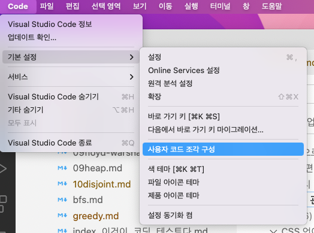

VS Code에서 snippets 만들기
공식 설명서(영문){target:_blank}
vscode에서 user snippet(사용자 코드 조각)을 입력할 yml 파일을 연다.

마크다운 파일에 사용할 코드 조각을 작성할 예정이므로 markdown.json을 선택한다.
아래와 같이 yaml 양식으로 작성한다.
- 전체 설정은 중괄호{} 안에 snippet 단위로 입력한다.
- 무엇에 관한 코드 조각인지 간결하지만 알기 쉬울만큼 자세하게 이름을 적는다. 아래는 “today’s log”, “python code block” 두 개의 이름을 만들었다.
- 각 이름 뒤에 콜론을 붙이고 다시 중괄호를 쓴다. {“today’s log”:{}, “python code block”:{}}. 중괄호 안에 구체적인 설정 사항을 입력한다.
- “prefix”에는 전체 코드의 약자로 사용할 문자열을 입력한다. 아래에서는 tlog와 cpy로 정의했다. tlog는 today’s log를, cpy는 code block python을 줄인 것이다.
- “body”에는 실제로 입력될 문자열을 입력한다. 위의 공식 설명서를 열면 사용할 수 있는 변수 목록과 설명을 볼 수 있다.
- 아래와 같이 설정한 뒤 마크다운 문서에서 tlog를 입력하고 ctrl+spacebar를 누르면 body에 정의한 내용대로 입력된다.
{
"today's log":{
"prefix": "tlog",
"body": [
"# $TM_FILENAME_BASE($CURRENT_DAY_NAME_SHORT)",
"created: $CURRENT_YEAR-$CURRENT_MONTH-$CURRENT_DATE",
"\n\n## "
]
},
"python code block":{
"prefix": "cpy",
"body": [
"```python",
"${1}",
"```",
""
]
}
}cpy 입력 후 ctrl + spacebar를 누른 뒤 엔터를 치면 아래처럼 입력된다.
커서가 여기에 위치함